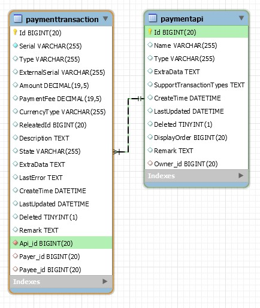
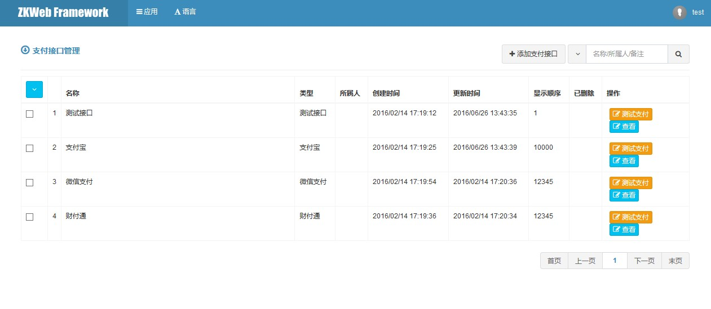

支付 (Finance.Payment)
支付插件提供了通过各种收款接口（支付宝，财付通等）收取钱款的功能。
支付插件实现了交易（订单交易，充值交易等）和收款接口的分离，收款接口只需要实现统一的接口就能支持各种交易。
支付接口和交易的数据结构
TODO: 更新这张图 
在后台管理支付接口
后台可以添加删除支付接口，并且可以设置每个支付接口的参数和可以使用的交易。

在后台管理支付交易
后台可以查看发起的交易记录，每笔交易都有对应的详细日志。

添加新的收款接口
添加收款接口需要继承IPaymentApiHandler。
以下是收款接口的示例代码，注意每种收款接口的处理流程都有不同，需要根据实际情况编写。
以支付宝为例
- 接口数据应该保存商家邮箱和密钥
- 获取支付Html时应该返回跳转到支付宝页面的html
- 调用发货接口时应该调用支付宝提供的发货api
- 同时还需要提供接收支付宝同步和异步通知的控制器
- 收到交易开始，付款成功等通知后，应该调用交易管理器通知指定的交易处理
/// <summary>
/// 测试接口的处理器
/// </summary>
[ExportMany]
public class TestApiHandler : IPaymentApiHandler {
/// <summary>
/// 接口类型
/// </summary>
public string Type { get { return "TestApi"; } }
/// <summary>
/// 编辑中的接口数据
/// </summary>
protected ApiData ApiDataEditing = new ApiData();
/// <summary>
/// 后台编辑表单创建后的处理
/// </summary>
public void OnFormCreated(PaymentApiEditForm form) {
form.AddFieldsFrom(ApiDataEditing);
}
/// <summary>
/// 后台编辑表单绑定时的处理
/// </summary>
public void OnFormBind(PaymentApiEditForm form, PaymentApi bindFrom) {
var apiData = bindFrom.ExtraData.GetOrDefault<ApiData>("ApiData") ?? new ApiData();
ApiDataEditing.PaymentPassword = apiData.PaymentPassword;
}
/// <summary>
/// 后台编辑表单保存时的处理
/// </summary>
public void OnFormSubmit(PaymentApiEditForm form, PaymentApi saveTo) {
saveTo.ExtraData["ApiData"] = ApiDataEditing;
}
/// <summary>
/// 计算支付手续费
/// </summary>
public void CalculatePaymentFee(PaymentApi api, decimal amount, ref decimal paymentFee) {
paymentFee = 0;
}
/// <summary>
/// 获取支付Html
/// </summary>
public void GetPaymentHtml(PaymentTransaction transaction, ref HtmlString html) {
var templateManager = Application.Ioc.Resolve<TemplateManager>();
var form = new TestApiPayForm(transaction);
form.Bind();
html = new HtmlString(templateManager.RenderTemplate("finance.payment/test_api_pay.html", new { form }));
}
/// <summary>
/// 调用发货接口
/// 发货后自动确认收货
/// </summary>
public void SendGoods(
PaymentTransaction transaction, string logisticsName, string invoiceNo) {
var logManager = Application.Ioc.Resolve<LogManager>();
logManager.LogTransaction(string.Format(
"PaymentApi send goods: transaction {0} logisticsName {1} invoiceNo {2}",
transaction.Serial, logisticsName, invoiceNo));
var transactionManager = Application.Ioc.Resolve<PaymentTransactionManager>();
transactionManager.Process(transaction.Id, null, PaymentTransactionState.Success);
}
/// <summary>
/// 接口数据
/// </summary>
public class ApiData {
/// <summary>
/// 支付密码
/// </summary>
[Required]
[StringLength(100, MinimumLength = 5)]
[PasswordField("PaymentPassword", "Password required to pay transactions")]
public string PaymentPassword { get; set; }
/// <summary>
/// 检查支付密码是否和设置的密码一致
/// </summary>
public void CheckPaymentPassword(string paymentPassword) {
if (string.IsNullOrEmpty(PaymentPassword) || paymentPassword != PaymentPassword) {
throw new ForbiddenException(new T("Incorrect payment password"));
}
}
}
}
添加新的交易类型
添加交易类型需要继承IPaymentTransactionHandler。
以下是测试交易的示例代码，注意需要根据每种交易的实际流程进行编写。
以订单交易为例
- 交易创建后: 不需要做特殊的处理，只需要记录到日志
- 等待付款时: 同上（在这个状态后订单金额应该不允许修改，否则有可能导致支付金额对不上）
- 担保交易付款后: 修改订单状态为等待发货，并在发货时调用支付接口的发货接口通知
- 交易成功时:
- 如果之前的交易状态是担保交易付款后，代表已确认收货，这时应该设置订单状态为交易成功
- 如果之前的交易状态时交易创建后，代表已付款，这时应该设置订单状态为等待发货
- 交易终止时: 这时应该在订单上显示交易已终止提醒后台管理员和用户
- 获取显示交易结果的Html: 显示当前的交易状态，并在一定时间后跳转到订单详情页
/// <summary>
/// 测试交易的处理器
/// </summary>
[ExportMany]
public class TestTransactionHandler : IPaymentTransactionHandler {
/// <summary>
/// 交易类型
/// </summary>
public string Type { get { return "TestTransaction"; } }
/// <summary>
/// 交易创建后
/// </summary>
public void OnCreated(PaymentTransaction transaction) {
var logManager = Application.Ioc.Resolve<LogManager>();
logManager.LogTransaction(string.Format("TestTransaction Created: {0}", transaction.Serial));
}
/// <summary>
/// 等待付款时
/// </summary>
public void OnWaitingPaying(
PaymentTransaction transaction, PaymentTransactionState previousState) {
var logManager = Application.Ioc.Resolve<LogManager>();
logManager.LogTransaction(string.Format("TestTransaction Waiting Paying: {0}", transaction.Serial));
}
/// <summary>
/// 担保交易付款后
/// 付款后自动发货
/// </summary>
public void OnSecuredPaid(PaymentTransaction transaction,
PaymentTransactionState previousState, IList<AutoSendGoodsParameters> parameters) {
var logManager = Application.Ioc.Resolve<LogManager>();
logManager.LogTransaction(string.Format("TestTransaction Secured Paid: {0}", transaction.Serial));
parameters.Add(new AutoSendGoodsParameters() { LogisticsName = "TestLogistics", InvoiceNo = "00000000" });
}
/// <summary>
/// 交易成功时
/// </summary>
public void OnSuccess(
PaymentTransaction transaction, PaymentTransactionState previousState) {
var logManager = Application.Ioc.Resolve<LogManager>();
logManager.LogTransaction(string.Format("TestTransaction Success: {0}", transaction.Serial));
}
/// <summary>
/// 交易终止时
/// </summary>
public void OnAbort(
PaymentTransaction transaction, PaymentTransactionState previousState) {
var logManager = Application.Ioc.Resolve<LogManager>();
logManager.LogTransaction(string.Format("TestTransaction Aborted: {0}", transaction.Serial));
}
/// <summary>
/// 获取显示交易结果的Html
/// </summary>
public void GetResultHtml(PaymentTransaction transaction, IList<HtmlString> html) {
var templateManager = Application.Ioc.Resolve<TemplateManager>();
var args = new { serial = transaction.Serial, state = transaction.State.GetDescription() };
html.Add(new HtmlString(
templateManager.RenderTemplate("finance.payment/test_transaction_result.html", args)));
}
}
创建交易
使用交易管理器可以创建交易。
创建交易前应该调用支付接口管理器计算好交易手续费（但一般都不会从付款人收取手续费）。
var transactionManager = Application.Ioc.Resolve<PaymentTransactionManager>();
var apiManager = Application.Ioc.Resolve<PaymentApiManager>();
var paymentFee = apiManager.CalculatePaymentFee(api.Id, Amount);
var transaction = transactionManager.CreateTransaction(
"TestTransaction", api.Id, Amount, paymentFee,
Currency, payerId, payeeId, payerId, Description);
完整交易流程（即时到账）
- 创建交易
- 调用
PaymentTransactionManager.CreateTransaction
- 调用
- 跳转到支付页面
- 调用
PaymentTransactionManager.GetPaymentUrl - 支付接口可以跳转到支付平台上，也可以提供一个表单在网站内部处理支付
- 支付接口应该设置一个返回页面
- 调用
- 用户支付完成
- 首先回到支付接口的返回页面
- 支付接口通知支付交易处理支付完成
- 处理成功时，跳转到显示支付结果的页面
- 调用
PaymentTransactionManager.GetResultUrl
- 调用
完整交易流程（担保交易）
- 创建交易
- 调用
PaymentTransactionManager.CreateTransaction
- 调用
- 跳转到支付页面
- 调用
PaymentTransactionManager.GetPaymentUrl - 支付接口可以跳转到支付平台上，也可以提供一个表单在网站内部处理支付
- 支付接口应该设置一个返回页面
- 调用
- 用户使用担保交易支付完成
- 首先回到支付接口的返回页面
- 支付接口通知支付交易处理担保交易已付款
- 处理成功时，跳转到显示支付结果的页面
- 调用
PaymentTransactionManager.GetResultUrl
- 调用
- 等待后台发货
- 后台发货后，应该调用支付接口的发货api
- 调用
PaymentTransactionRepository.SendGoods
- 调用
- 通知用户确认收货后，到支付平台上确认收货
- 后台发货后，应该调用支付接口的发货api
- 用户到支付平台上确认收货
- 支付平台给支付接口发出通知
- 支付接口把交易状态设为交易成功
- 调用
PaymentTransactionRepository.Process
- 调用